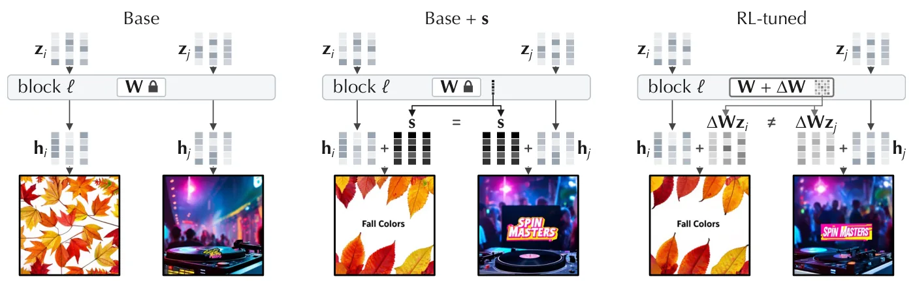
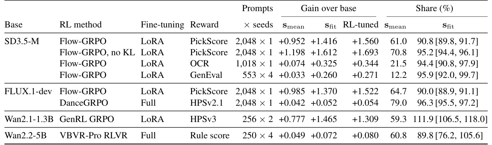
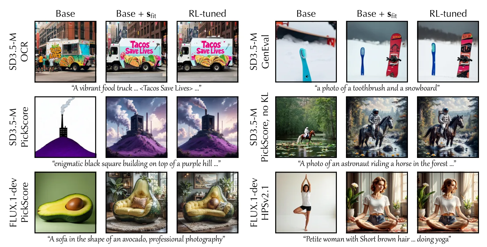
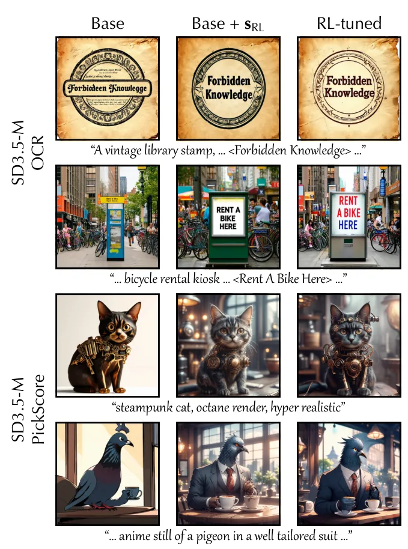

O Mito da Complexidade Dependente de Entrada
O pós-treinamento por Reinforcement Learning (RL) tem se mostrado essencial para melhorar a qualidade visual, a renderização de texto e a precisão composicional em Diffusion Transformers (DiTs). Modelos como SD3.5-M e FLUX.1-dev alcançam resultados impressionantes ao serem ajustados com algoritmos como Flow-GRPO, otimizando recompensas baseadas em preferência humana ou precisão de texto (OCR). A suposição padrão na comunidade de IA generativa é que, como tarefas como escrever palavras corretas ou compor múltiplos objetos dependem fortemente do prompt, o modelo precisa aprender transformações complexas e dependentes da entrada para alcançar esse nível de sofisticação.
Essa intuição leva à prática comum de atualizar os pesos do modelo, seja através de fine-tuning completo ou adaptadores eficientes como LoRA (Low-Rank Adaptation). Ao modificar os pesos, a rede cria uma nova função de ativação que responde de maneira única a cada prompt, cada token e cada seed de amostragem. Parece natural: se o texto a ser renderizado muda, a correção interna do modelo também deveria mudar.
No entanto, esta hipótese de que a melhoria requer necessariamente mudanças dependentes de entrada é questionada neste trabalho. Os autores propõem um experimento de isolamento radical: e se a maior parte do ganho de RL pudesse ser explicada por um deslocamento de ativação independente da entrada? Em vez de ajustar milhões de parâmetros de pesos, eles testam se um conjunto fixo de vetores de steering, somados às saídas dos blocos do modelo congelado, pode replicar os benefícios do RL.

O Mecanismo de Steering de Ativação
A técnica central deste estudo é o 'Activation Steering'. Em vez de modificar a matriz de pesos W de uma camada linear, os autores adicionam um vetor constante s à saída de cada bloco do transformer. Matematicamente, se a saída original do bloco l para o token i é h, a saída dirigida é h + s. O ponto crucial é que s não depende do token i, nem do prompt de entrada, nem da seed de ruído. Ele é uma constante aprendida ou ajustada para aquele bloco específico.
Para maximizar a eficiência, os vetores de steering são parametrizados de forma esparsa. Eles variam apenas com o bloco do modelo, a passagem de orientação (conditional ou unconditional no Classifier-Free Guidance) e um 'step bin' que divide o processo de sampling em duas fases: etapas iniciais (t ≥ 0.75) e etapas finais (t < 0.75). Essa estrutura reduz drasticamente o número de parâmetros. No modelo SD3.5-M, o conjunto completo de vetores de steering possui apenas 0.29 milhões de parâmetros.
Em contraste, um adaptador LoRA de rank-32, que é o padrão para pós-treinamento eficiente em muitos pipelines, possui 18.8 milhões de parâmetros no mesmo modelo. Isso significa que os vetores de steering usam 65 vezes menos parâmetros que o LoRA. Apesar dessa simplicidade extrema, a hipótese é que eles capturam a essência da correção que o RL tenta impor ao modelo.
Como os Vetores São Ajustados
Os autores não treinam esses vetores com recompensas complexas. Em vez disso, eles usam uma técnica de 'velocity matching'. Eles pegam checkpoints públicos de modelos já ajustados por RL e comparam as previsões de velocidade (velocity predictions) desses modelos com as do modelo base congelado. Para cada bloco, passo de sampling e passagem de orientação, eles calculam a diferença média nas ativações que o modelo RL-tuned produz em relação ao base.
Essa diferença média é usada como o vetor de steering s. Não há otimização de recompensa envolvida neste ajuste; é puramente uma correspondência estatística das saídas. Curiosamente, apenas calcular a diferença média (mean-difference) não é suficiente para recuperar todo o ganho. Os autores ajustam os vetores diretamente para minimizar a diferença nas previsões de velocidade finais, garantindo que o modelo steered imite o comportamento do modelo RL-tuned o mais fielmente possível.
É importante notar que os vetores são compartilhados entre todos os tokens. Isso parece contraintuitivo para tarefas como renderização de texto, onde a correção necessária para a letra 'A' pode ser diferente da letra 'B'. A pergunta que motiva o estudo é: será que o modelo base, mesmo congelado, já possui a capacidade de transformar esse deslocamento constante em uma resposta específica ao prompt, através de suas camadas internas?

Resultados: Quase Tudo Pode Ser Explicado
Os resultados são surpreendentes na sua eficácia. Ao aplicar os vetores de steering fixos ao modelo base SD3.5-M, os autores recuperam entre 90.0% e 96.3% do ganho de recompensa obtido por seis modelos de imagem ajustados por RL. Esses modelos variam em algoritmos de RL, tipos de recompensa (PickScore, HPSv2.1, OCR, GenEval) e métodos de ajuste (LoRA ou full fine-tuning). O mesmo padrão se repete em geração de vídeo: em dois modelos RL-tuned, o steering recuperou 89.8% e 111.9% do ganho, respectivamente.
Isso significa que a maior parte do que consideramos 'inteligência' adicionada pelo pós-treinamento não reside em novas conexões sinápticas complexas, mas em uma reorientação global das ativações. O modelo base, quando 'empurrado' pelos vetores certos, consegue acessar representações que já estavam lá, mas que não eram acessíveis ou suficientemente fortes sem essa correção.
Para validar se isso é um artefato do ajuste por correspondência de velocidade, os autores realizaram um experimento de RL direto. Eles congelaram todos os pesos do SD3.5-M e treinaram apenas os vetores de steering usando Flow-GRPO, começando com vetores zerados. O modelo treinado apenas com steering superou o modelo ajustado por pesos em recompensa de OCR e PickScore, alcançando 104.6% e 103.6% do ganho, respectivamente. Isso prova que o RL pode aprender a corrigir o modelo apenas através desses vetores constantes.

O Segredo está na Atenção Conjunta
Se os vetores são iguais para todos os prompts, como o modelo consegue renderizar textos diferentes corretamente? A resposta está na arquitetura do Diffusion Transformer. Dentro dos blocos, as camadas de atenção e normalização misturam as ativações. O vetor de steering constante é somado às saídas dos blocos, mas ele interage com as representações dependentes do prompt que fluem através do modelo.
Os autores rastreiam como esse efeito chega à imagem final. Eles descobrem que o ganho depende criticamente da 'joint attention', onde tokens de imagem e tokens de texto atendem uns aos outros. Quando eles substituem os tokens de texto usados na atenção pelos tokens do modelo base não-steered (mantendo tudo o mais igual), a maioria dos ganhos de OCR e PickScore desaparece.
Isso indica que o vetor de steering atua como um sinal de controle que é interpretado diferentemente dependendo do contexto textual. O modelo base já sabe como desenhar a palavra 'gato'; o que o RL faz é ajustar o vetor de steering para garantir que, quando o prompt contém 'gato', a atenção conjunta amplifique as características visuais corretas e suprima ruídos. A complexidade não está na correção, mas na interpretação da correção pelo contexto.

Limitações e Implicações
Apesar dos resultados robustos, é importante destacar o escopo deste estudo. A pesquisa foca em modelos que usam gradientes de política (policy-gradient) para pós-treinamento. Métodos alternativos, como otimização de preferência direta (DPO) ou backpropagation de recompensa, não foram testados. Não sabemos se esses métodos também resultam em ganhos explicáveis por steering de ativação ou se eles realmente aprendem transformações dependentes de entrada mais complexas.
Além disso, o estudo não descarta a possibilidade de que transformações dependentes de entrada sejam úteis em algum nível. Talvez os métodos atuais de RL não sejam capazes de aprender essas transformações complexas de forma eficiente, e o steering seja apenas a solução mais fácil que o otimizador encontra. No entanto, a eficiência de parâmetros é inegável: 0.29M vs 18.8M é uma diferença operacional significativa para deploy em recursos limitados.
Os vetores de steering também mostram boa transferência. Eles funcionam em diferentes resoluções (512px a 1024px) e em diferentes números de passos de sampling, desde que a estrutura de step bins seja mantida. Isso sugere que a correção é uma propriedade fundamental da dinâmica do modelo base, e não um ajuste fino para uma configuração específica de inferência.
Conclusão: Redescobrindo o Modelo Base
Este paper desafia a narrativa de que o pós-treinamento por RL é principalmente sobre ensinar o modelo a fazer coisas novas. Em vez disso, ele sugere que o RL atua principalmente como um mecanismo de direcionamento, guiando o modelo base para acessar capacidades que já existem em sua representação latente. A 'inteligência' adicionada não é nova; é apenas mais acessível.
Para desenvolvedores e pesquisadores, isso tem implicações práticas imediatas. Em vez de treinar LoRAs pesados ou fazer fine-tuning completo, pode ser mais eficiente e robusto treinar um conjunto pequeno de vetores de steering. Isso reduz o risco de 'catastrophic forgetting', simplifica o pipeline de deploy e oferece uma interpretabilidade maior sobre o que está acontecendo nas camadas intermediárias do modelo.
A mensagem final é clara: antes de assumir que um modelo precisa de ajustes complexos e dependentes de entrada para melhorar, verifique se um simples deslocamento constante não é suficiente para liberar seu potencial já existente. A complexidade pode ser uma ilusão criada pela forma como interpretamos as saídas do modelo, não pela complexidade dos pesos necessários para produzi-las.
O que fica
- Vetores de steering fixos recuperam 90-96% do ganho de recompensa de modelos ajustados por RL, com 65x menos parâmetros.
- A melhoria não vem de novas transformações dependentes de entrada, mas de reorientar o que o modelo base já sabe fazer.
- O ganho ocorre principalmente nas etapas iniciais do sampling e via atenção conjunta entre tokens de texto e imagem.
- Treinar apenas esses vetores com RL supera o ajuste de pesos completo em métricas de OCR e preferência humana.
Paper original: RL Post-Training in Diffusion Transformers Is Activation Steering
Comentários
Nenhum comentário ainda. Seja o primeiro.